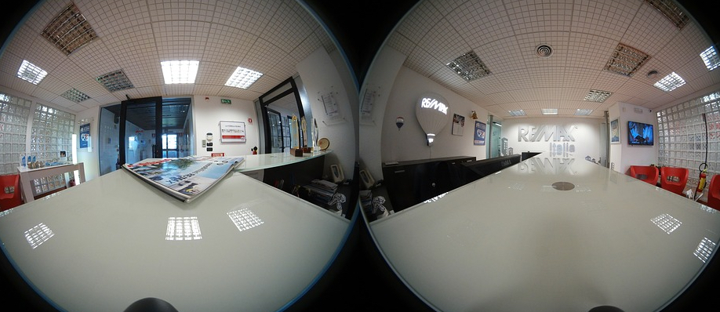

augmented
reality
-

uses
In both lower and high level education augmented reality has become an effective teaching tool that help students get a visual and real time understanding of the material.
-
technologies
Already developed augmented reality is being put to use under multiple applications focused on educational subjects and practical applications for the classroom.
-
benefits
Augmented reality allows students to participate interactively and collaborate using the surrounding environment and virtual objects and increases engagement.
-
concerns
Obtaining augmented reality technology might be simple through applications; however the technological devices necessary for the download of the augmented reality software raises concerns about cost.

In educational settings, AR has been used to complement a standard curriculum. Text, graphics, video and audio were superimposed into a student’s real time environment. Textbooks, flashcards and other educational reading material contained embedded “markers” or triggers that, when scanned by an AR device, produced supplementary information to the student rendered in a multimedia format.
sky view
SkyView is an application that allows users to see stars, planets, satellites, and constellations at day or night, as well as tract and receive updates on these. It allows easy access that informs users, making them aspiring astronomers.
click here to learn more.
4D anatomy
4D Anatomy is an application resource used on smartphones or tablets that allows students as well as the public to understand anatomy. Through interactive dissection simulations as well as image navigation and manipulation features, students receive the three-dimensional understanding without the cost and mess of a dissection.
click here to learn more.
ar curcuits
AR Circuits app allows users to build and test realistic circuits using augmented reality without the expense, safety concerns, and inconveniences that come with physical electronic components.
click here to learn more.
arise project
Arise is a project developing an augmented-reality-teaching platform for school classes. It’s aim is to use existing augmented reality technology that is in museums to be adapted to the everyday learning environment of teachers and students. The platform will provide 3D visual augmentation of real objects and sound and will be integrated with a multi-media database and an e-learning tool.
click here to learn more.
in class
Students attention is increase, dealing with new technology excites an engaged and interested mindset. Students visually learn through the augmented reality and interact with the subject material. Subject material presented through augmented reality demands the attention and concentration of the user compared to reading a textbook, where there are many more distractions. By having increased participation and concentration the users learn more effectively providing teaches with a vital classroom tool. Augmented reality makes the learning material accessible by increasing the creativity students are able to explore and absorb new knowledge and solve problems with a deeper understanding. AR assists in developing students spatial abilities. While there are higher one-time acquisition costs of technology are high, the cost per class and overall cost is lowered.
high price
Obtaining augmented reality technology might be simple through applications; however the technological devices necessary for the download of the augmented reality software raises concerns about cost.